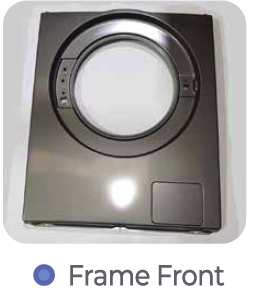
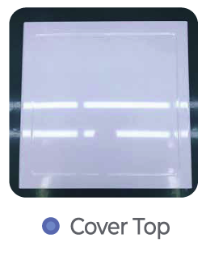
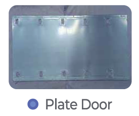
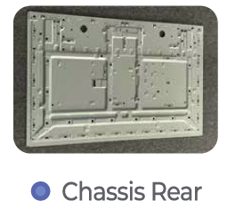
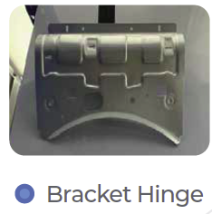
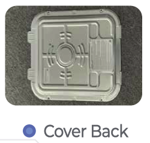

SMC Phu My Precision: Chấn Dập & Gia Công Chính Xác
Chúng tôi cung cấp các giải pháp chấn dập và gia công kim loại tấm hàng đầu với năng lực sản xuất vượt trội, đáp ứng mọi yêu cầu khắt khe nhất của khách hàng.
Năng Lực Sản Xuất
SMC Phu My Precision được trang bị các dây chuyền dập hiện đại, đảm bảo hiệu suất và độ chính xác cao:
- Dây chuyền 1 & 2: Máy dập 800T với 6 bước dập, sử dụng hệ thống truyền tự động (Auto Transfer M/C) và có khả năng dập liên hoàn (800t-600t-400t, 400t-400t-400t). Dây chuyền hiện đại từ nhà cung ứng Hàn Quốc SIMPAC.
- Dây chuyền 3: Máy dập đơn 600T.
Sản Phẩm Chính
Chúng tôi có khả năng sản xuất hàng triệu sản phẩm dập mỗi tháng bao gồm các linh kiện như:
-
Khung trước máy giặt (Washing machine Frame Front)

-
Nắp trên máy giặt (Washing machine Cover Top)

-
Cửa tấm tủ lạnh (Fridge Plate Door)

-
Khung Tivi (TV Chassis Rear)

-
Bản lề khung (Bracket Hinge)

-
Nắp lưng (Cover Back)

Các sản phẩm hiện tại của chúng tôi bao gồm các bộ phận cho máy giặt, tủ lạnh, và các sản phẩm lắp ráp khác. Chúng tôi cũng sản xuất các sản phẩm cho ngành điện, điện lạnh, ô tô, v.v..
Dịch Vụ OEM & ODM
Với năng lực sản xuất hiện đại và đội ngũ chuyên gia giàu kinh nghiệm, SMC Phu My Precision tự tin cung cấp các dịch vụ OEM (sản xuất theo thiết kế của khách hàng) và ODM (thiết kế và sản xuất theo yêu cầu). Chúng tôi cam kết mang đến những sản phẩm chất lượng cao, đáp ứng đúng thông số kỹ thuật và thời gian giao hàng.
Chủ Động Nguồn Cung Ứng Thép
Là một phần của SMC Group, chúng tôi có lợi thế lớn trong việc tự chủ động tìm kiếm và cung ứng nguồn nguyên liệu thép chất lượng cao thông qua SMC Phu My Coil Center. Điều này giúp chúng tôi kiểm soát chặt chẽ chất lượng đầu vào, tối ưu hóa chi phí sản xuất và đảm bảo sự ổn định trong chuỗi cung ứng. Nguyên liệu thép được cung cấp từ các nhà máy thép hàng đầu như CSVC, POSCO, Nam Kim, Tôn Đông Á, Yiehphui, Nippon, JFE, v.v.
SMC Phu My Precision: Stamping & Precision Machining
We provide leading stamping and sheet metal processing solutions with outstanding production capacity, meeting all stringent customer requirements.
Production Capacity
SMC Phu My Precision is equipped with modern press lines, ensuring high efficiency and precision:
- Lines 1 & 2: 800T press machine with 6 steps, using Auto Transfer M/C, capable of continuous stamping (800t-600t-400t, 400t-400t-400t). Modern lines from Korean supplier SIMPAC.
- Line 3: 600T single press machine.
Key Products
We are capable of producing millions of stamped products each month, including components such as:
-
Washing machine Frame Front
-
Washing machine Cover Top
-
Fridge Plate Door
-
TV Chassis Rear
-
Bracket Hinge
-
Cover Back
Our current products include components for washing machines, refrigerators, and other assembled products. We also produce items for the electrical, refrigeration, automotive industries, etc.
OEM & ODM Services
With modern production capabilities and an experienced team of experts, SMC Phu My Precision confidently provides OEM (manufacturing according to customer designs) and ODM (design and manufacturing according to requirements) services. We are committed to delivering high-quality products that meet precise specifications and delivery times.
Proactive Steel Supply
As part of SMC Group, we have a significant advantage in proactively sourcing and supplying high-quality steel raw materials through SMC Phu My Coil Center. This allows us to strictly control input quality, optimize production costs, and ensure supply chain stability. Steel raw materials are supplied from leading global steel manufacturers such as CSVC, POSCO, Nam Kim, Ton Dong A, Yiehphui, Nippon, JFE, etc.
SMC富美精密：冲压与精密加工
我们提供领先的冲压和钣金加工解决方案，拥有卓越的生产能力，满足客户所有严格要求。
生产能力
SMC富美精密配备现代化冲压生产线，确保高效率和高精度：
- 1号线和2号线： 800吨冲压机，6步冲压，采用自动传输机（Auto Transfer M/C），可连续冲压（800t-600t-400t, 400t-400t-400t）。来自韩国供应商SIMPAC的现代化生产线。
- 3号线： 600吨单冲压机。
主要产品
我们每月能够生产数百万件冲压产品，包括以下组件：
-
洗衣机前框 (Washing machine Frame Front)
-
洗衣机顶盖 (Washing machine Cover Top)
-
冰箱门板 (Fridge Plate Door)
-
电视机底盘 (TV Chassis Rear)
-
铰链支架 (Bracket Hinge)
-
后盖 (Cover Back)
我们目前的产品包括洗衣机、冰箱和其他组装产品的部件。我们也为电气、制冷、汽车等行业生产产品。
OEM & ODM 服务
凭借现代化的生产能力和经验丰富的专家团队，SMC富美精密自信地提供OEM（根据客户设计制造）和ODM（根据要求设计和制造）服务。我们致力于提供高质量产品，满足精确的规格和交货时间。
主动钢材供应
作为SMC集团的一部分，我们通过SMC富美钢卷中心主动采购和供应高质量钢材原材料具有显著优势。这使我们能够严格控制投入质量，优化生产成本，并确保供应链的稳定性。钢材原材料由领先的钢厂供应，如CSVC、POSCO、Nam Kim、Ton Dong A、Yiehphui、Nippon、JFE等。
SMC 푸미 정밀: 스탬핑 및 정밀 가공
우리는 뛰어난 생산 능력으로 최고의 스탬핑 및 판금 가공 솔루션을 제공하며, 고객의 모든 엄격한 요구 사항을 충족합니다.
생산 능력
SMC 푸미 정밀은 고효율 및 정밀도를 보장하는 현대적인 프레스 라인을 갖추고 있습니다:
- 라인 1 & 2: 6단계 800T 프레스 기계, 자동 이송 장치(Auto Transfer M/C) 사용, 연속 스탬핑 가능 (800t-600t-400t, 400t-400t-400t). 한국 공급업체 SIMPAC의 현대적인 라인입니다.
- 라인 3: 600T 단일 프레스 기계.
주요 제품
우리는 매월 수백만 개의 스탬핑 제품을 생산할 수 있으며, 다음 구성 요소를 포함합니다:
-
세탁기 전면 프레임 (Washing machine Frame Front)
-
세탁기 상단 커버 (Washing machine Cover Top)
-
냉장고 문판 (Fridge Plate Door)
-
TV 섀시 후면 (TV Chassis Rear)
-
브래킷 힌지 (Bracket Hinge)
-
후면 커버 (Cover Back)
현재 제품에는 세탁기, 냉장고 및 기타 조립 제품용 부품이 포함됩니다. 또한 전기, 냉동, 자동차 산업 등을 위한 품목도 생산합니다。
OEM & ODM 서비스
현대적인 생산 능력과 경험이 풍부한 전문가 팀을 통해 SMC 푸미 정밀은 OEM(고객 설계에 따른 제조) 및 ODM(요구 사항에 따른 설계 및 제조) 서비스를 자신 있게 제공합니다。 우리는 정확한 사양과 납기일을 충족하는 고품질 제품을 제공하기 위해 최선을 다합니다。
선제적 철강 공급
SMC 그룹의 일원으로서, 우리는 SMC 푸미 코일 센터를 통해 고품질 철강 원자재를 선제적으로 조달하고 공급하는 데 큰 이점을 가지고 있습니다. 이를 통해 우리는 투입 품질을 엄격하게 통제하고, 생산 비용을 최적화하며, 공급망의 안정성을 보장할 수 있습니다. 철강 원자재는 CSVC, POSCO, Nam Kim, Ton Dong A, Yiehphui, Nippon, JFE 등과 같은 선도적인 철강 공장에서 공급됩니다。
SMCフーミープレシジョン：プレス加工と精密加工
私たちは、卓越した生産能力を持つ最先端のプレス加工および板金加工ソリューションを提供し、お客様のあらゆる厳しい要件を満たします。
生産能力
SMCフーミープレシジョンは、高効率と高精度を保証する最新のプレスラインを備えています。
- ライン1および2: 6工程800Tプレス機、自動搬送装置（Auto Transfer M/C）を使用し、連続プレス加工が可能（800t-600t-400t、400t-400t-400t）。韓国のサプライヤーSIMPACからの最新ラインです。
- ライン3: 600T単一プレス機。
主要製品
私たちは毎月数百万個のプレス加工品を生産することができ、以下の部品が含まれます。
-
洗濯機フレームフロント (Washing machine Frame Front)
-
洗濯機カバートップ (Washing machine Cover Top)
-
冷蔵庫プレートドア (Fridge Plate Door)
-
テレビシャーシリア (TV Chassis Rear)
-
ブラケットヒンジ (Bracket Hinge)
-
カバーバック (Cover Back)
現在の製品には、洗濯機、冷蔵庫、その他の組み立て製品の部品が含まれます。また、電気、冷凍、自動車産業向けの製品も生産しています。
OEM & ODMサービス
最新の生産能力と経験豊富な専門家チームにより、SMCフーミープレシジョンはOEM（お客様の設計に基づく製造）およびODM（要件に基づく設計と製造）サービスを自信を持って提供します。私たちは、正確な仕様と納期を満たす高品質な製品を提供することをお約束します。
積極的な鋼材供給
SMCグループの一員として、私たちはSMCフーミーコイルセンターを通じて高品質な鋼材原材料を積極的に調達・供給できるという大きな利点を持っています。これにより、投入品質を厳格に管理し、生産コストを最適化し、サプライチェーンの安定性を確保することができます。鋼材原材料は、CSVC、POSCO、Nam Kim、Ton Dong A、Yiehphui、Nippon、JFEなど、主要な製鉄所から供給されています。